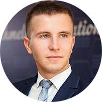

|  | Every finish it is a start something new.. (c) Lina Kostenko |
I am Ruslan Kryzhanivskyi, and 24 years old. I was born in 16th November 1998 and I have a powerfull - I am Ukrainian.
All of my life I live in Cherkasy on 15 Hvardiyskyi street. When I was 7 went to the 24th school in first class and started studing at school.
When I was sixteen years old I started to improve my studying skills and make me active student. I finished the school in 2016 and entered in Cherkasy nationaly university name after Bohdan Khmelnytskyi. I was a very convinient and responsibility student and go work in lots of organizations and presscenters. I graduenet from university in 2020 during the COVID pandemy. In was exiting period of my life becouse I formed myself as well as I am currently.
| First course | Second course | Third course | Fourth course |
|---|---|---|---|
| 91% | 93% | 96% | 99% |
| ⭐ | ⭐⭐ | ⭐⭐⭐ | ⭐⭐⭐⭐ |
Come back